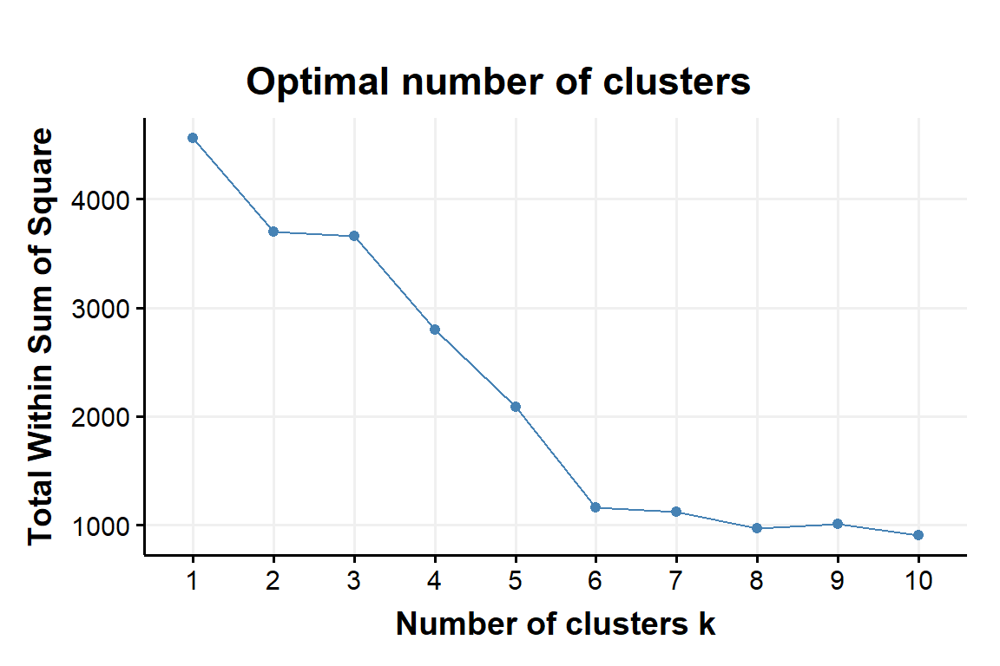
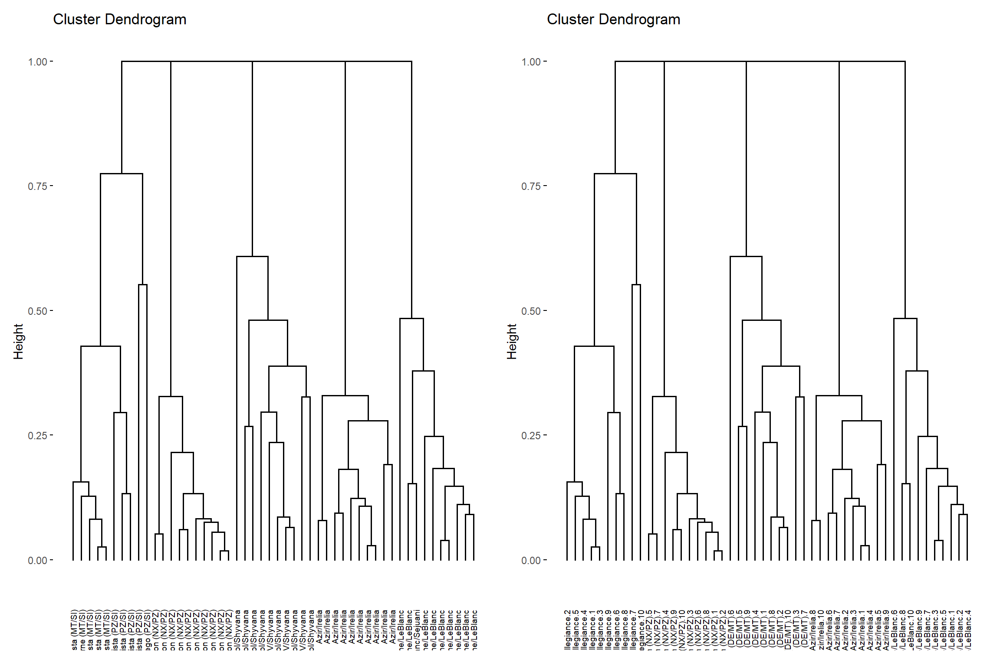
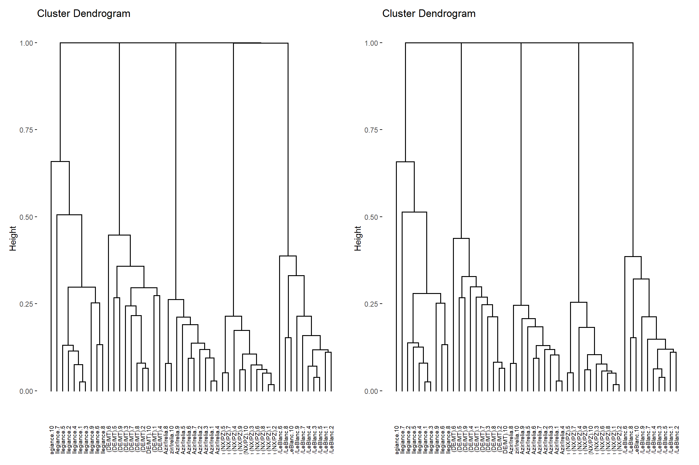
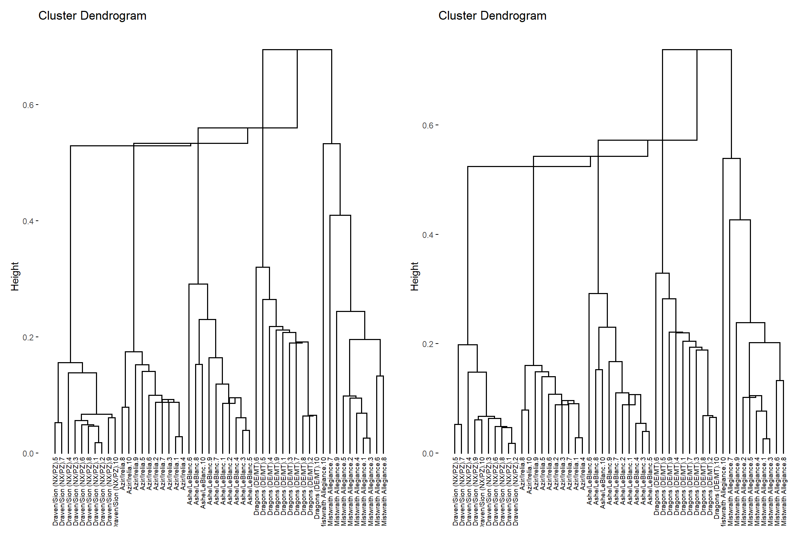

Introduction
Defining archetypes on Legends of Runeterra is both a complex and simple problem. It’s simple if we consider that it’s possible to define decks by the combination of champions and regions of choice but it’s also complex by the fact that such definition is quite limited.
On our previous article/analysis we gave a possible method about how to compare archetypes and see if they can be considered from a shared common archetype or not. The proposed method makes use of inferential statistical analysis to reach a conclusion. Sadly, it’s also a methodology that’s more fitting a posterior analysis, when hypothetical archetypes are already defined, a tool more fitted to refine the results and not to define archetypes.
A more fitting methodology to find archetype is a form of exploratory data analysis (EDA) known as Clustering Analysis (CA). Its aim is to find subgroups (or clusters) in our data without relying on a response variable, also the reason why it’s called unsupervised learning.
As useful as it is a CA suffer from a fundamental problem of not being able to check out the quality of the results. With a vast array of different algorithms and hyper-parameters this also means that finding the the “correct” way to use a CA to define archetypes (which was supposed to be the aim of this article) is not only impossible, it’s also seeing the CA in the wrong way. Surely some choices are better than others but there is no perfect answer and to be fair, this was making us, was making me, procrastinating the writing of this article. The result, or maybe compromise was to reduce the scale on this article which will be small dive into the cluster analysis. While I want to provide some food for thought for others in the end the main recipient of the article is myself, to provide me a more solid foundation on the topic and how to approach it knowing the basic limitations of what I’m planning to use.
Data
The example used in this article is made out of 50 decks. More details will be described
- Five archetypes with Different regions & different play style
- Azir/Irelia
- Ashe/LeBlanc
- Dragons (DE/MT)
- Draven/Sion (NX/PZ)
- Mistwraith Alligiance
More details about how they were chosen will be written later as results are shown
Clustering
Clustering is a basic data mining task with a wide variety of applications. not surprisingly, there exist many clustering algorithms. However, clustering is an ill defined problem - given a data set, it is not clear what a “correct” clustering for that set is. Indeed, different algorithms may yield dramatically different outputs for the same input sets. In spite of the wide use of clustering in many practical applications, currently, there exist no principled method to guide the selection of a clustering algorithm. Currently, such decisions are often made in a very ad hoc, if not completely random, manner. Users are aware of the cost involved in employing different clustering algorithms, such as running times, memory requirement, and software.
Clustering is applied in a wide range of disciplines, from astronomy to zoology, yet its theoretical underpinnings are still poorly understood. Even the fairy basic problem of which algorithm to select for a given application (known as “the user dilemma”) is left to ad hoc solutions, as theory is only starting to address fundamental differences between clustering methods.
Clustering refers to a very broad set of techniques for findings subgroups or clusters, in a data set. When we cluster the observations of a data set, we seek partition then into distinct groups so that the observations within each group are quite similar to each other, while observation in a different groups are quite different from each other. Of course, to make this concrete, we must define what it means for two or more observations to be similar or different
Since clustering is popular in many fields, there exist a great number of clustering methods
K-Mean
K-means clustering is a simple and elegant approach for partitioning a data set into K distinct, non-overlapping clusters. To perform K-means clustering, we must first specify the desired number of clusters K; then the K-means algorithm will assign each observation to exactly one of the K clusters. After the initialization step, the algorithm iterate until cluster assignments stop changing:
For each of the K clusters, compute the cluster centroid. The kth cluster centroid is the vector of the p-feature means for the observations in the kth cluster
Assign each observation to the cluster whose centroid is closest (where closest is defined using Euclidean distance)
As we have seen, to perform K-means clustering, we must decide how many clusters we expect in the data. The problem of selecting K is far from simple. This issue, along with other practical considerations that arise performing K-means clustering like is variables should be first be standardized in some way?
As you may recall the analyst specifies the number of clusters to use; preferably the analyst would like to use the optimal number of clusters. To aid the analyst, the following explains the three popular methods for determining the optimal clusters, which includes
- Elbow method
Recall that, the basic idea behind cluster partitioning methods, such as K-means clustrering, is to define clusters such that the total intra-cluster variation (known as total within-cluster variation or total within-cluster sum of square is minimized:)
\(minimize(\sum_k=1^kW(C_k))\)
The total within-cluster sum of squares (wss) measures the compactness of the clustering and we want it to be as small as possible. Thus, we can use the following algorithm to define the optimal clusters
Plot the curve of wss according to the number of clusters k The location of a bend (knee) in the plot is generally considered as an indicator of the appropriate number of clusters
This is because normally the wss is related to the number of cluster by a monotone decreasing function, meaning that is the aim is simply to minimise wss then having k = n clusters each of them corresponding to a single element would give the min-wss. One must search the optimal value we are searching for is in 1 < k < |X| finding a comprise bewtween the reduction of the objective function wss and the dimension of the hyper-parameter n. The common practise is to use the Elbow method as it tells us when increasing n is less “worth” compared to the reduction in wss.

- Silhouette method
Prior to this article I’m not sure I even heard about this metric: From Wikipedia, the silhouette is defined as:
The silhouette value is a measure of how similar an object is to its own cluster (cohesion) compared to other clusters (separation). The silhouette ranges from −1 to +1, where a high value indicates that the object is well matched to its own cluster and poorly matched to neighboring clusters. If most objects have a high value, then the clustering configuration is appropriate. If many points have a low or negative value, then the clustering configuration may have too many or too few clusters.

Using K-means the algorithm is suggesting us around 6 or 7 clusters. We will discuss later the quality of these choices, for now we will focus on the algorithm per se.
K-means while a powerful tool in many fields doesn’t seems to be the best choice for the archetype problem. First of all, is requires the user to define a priori the number of cluster it needs to find. This is almost the opposite of what we would like from our algorithm. Ideally by clustering we would prefer some indication regarding which deck to aggregate into a single archetype, or even division of sub-archetypes if the region+champion combination is not enough to distinguish archetypes. In addition, K-means present other problems like having to start with a randomized assignment of clusters, this, of course can be controlled by having fixed seeds, rng but it still hinder the reproducibility of our results. The choice of k is also too much subjective, especially if n is very large and the knee is not as clear as in this example. Lastly but not less important, there is less flexibility regarding the measure/distance to compare decks. While we are not limited to the Euclidean distance we can’t use any distance of choice as possible with other class of cluster algorithm.
Hierarchical Clustering
One potential disadvantage of K-means clustering is that it requires us to pre-specify the number of clusters K. Hierarchical clustering is an alternative approach which does not require that we commit to a particular choice of K. Hierarchical clustering has an added advantage over K-means clustering in that it results in an attractive tree-based representation of the observations, called a dendogram.
The hierarchical clustering dendogram is obtained via an extremely simple algorithm. We begin by defining some sort of dissimilarity measure between each pair of observations. Most often, Euclidean distance is used; The algorithm proceeds iteratively. Starting out at the bottom of the dendogram, each of the n observations is treated as its own cluster, The two clusters that are most similar to each other are then fused so that there are now n-1 clusters. The algorithm proceeds in this fashion until all of the observations belong to one single cluster, and the dendogram is complete.
This agorithm seems simple enough, but one issue has not been addressed. Consider the aggregation step, how did we determine which a cluster should be fused with another cluster. We have a concept of the dissimilarity between pairs of observations, but how do we define the dissimilarity between two clusters if one or both of the clusters contains multiple observations? The concept of dissimilarity between a pair of observations needs to be extended to a pair of groups of groups of observations. This extensions is archieved by developing the notion of linkage, which defines the dissimilarity between two groups of observations.
The five most common types of linkage are:
- Single Linkage: In single linkage, we define the distance between two clusters as the minimum distance between any single data point in the first cluster and any single data point in the second cluster. On the basis of this definition of distance between clusters, at each stage of the process we combine the two clusters with the smallest single linkage distance.
With d is a distance function
\[\begin{equation} \textit{l}_{SL}=min_{a\in A,b\in B}d(a,b) \tag{1} \end{equation}\]- Complete Linkage: In complete linkage, we define the distance between two clusters to the maximum distance between any single data point in the first cluster and any single data point in the second cluster. On the basis of this definition of distance between clusters, at each stage of the process we combine the two clusters that have the smallest/complete linkage distance.
- Average Linkage: In average linkage, we define the distance between two clusters to be the average distance between data points in the first cluster and data points in the second cluster. On the basis of this definition of distance between clusters, at each stage of the process we combine the two clusters that have the smallest average linkage distance.
\(\textit{l}_{CL}(A,B,d)=\frac{\sum_{a\in A,b\in B}d(a,b)}{|A| \cdot |B| }\)
\[\begin{equation} \textit{l}_{CL}(A,B,d)=\frac{\sum_{a\in A,b\in B}d(a,b)}{|A| \cdot |B| } \tag{3} \end{equation}\]- Centroid Linkage: In centroid linkage, the distance between two clusters is the distance between the two mean vectors of the clusters also kown centroid, also kown as barycentre. At each stage of the process we combine the two clusters that have the smallest centroid distance. Centroid linkage can result in undesirable inversions, whereby two clusters are fused at a height below either of the individual clusters in the dendogram.
- Ward’s Method: This method does not directly define a measure of distance between two points or clusters. It is an ANOVA based approach. One-way univariate ANOVAs are done for each variable with groups defined by the clusters at the stage of the process. At each stage, two clusters merge that provide the smallest increase in the combined error sum of squares. ( We won’t try this method )
function (..., sep = " ", collapse = NULL, recycle0 = FALSE)
.Internal(paste(list(...), sep, collapse, recycle0))
<bytecode: 0x0000000013cc25c8>
<environment: namespace:base>
Legal bla bla
This content was created under Riot Games’ “Legal Jibber Jabber” policy using assets owned by Riot Games. Riot Games does not endorse or sponsor this project.